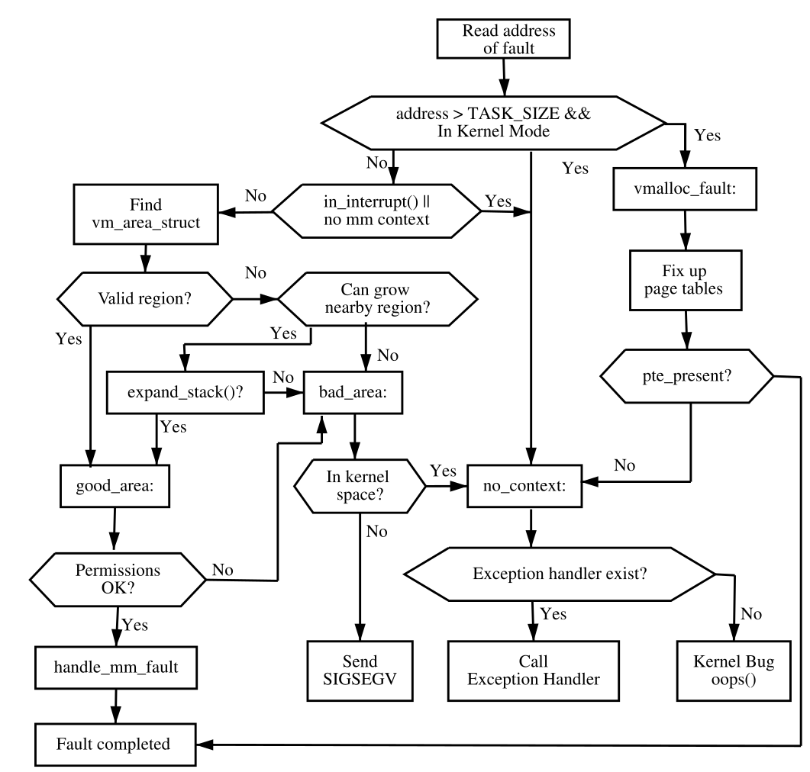
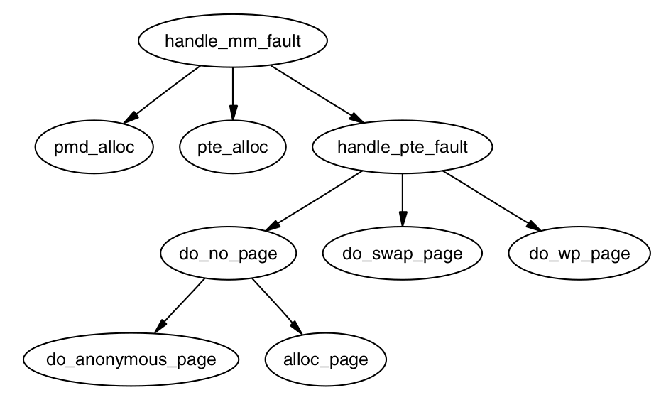
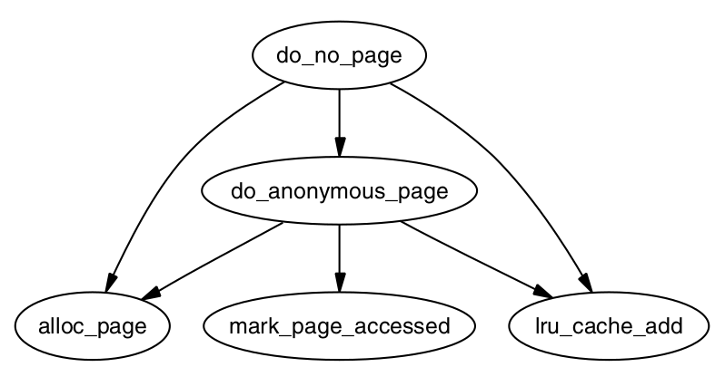

进程地址空间
Table of Contents
虚拟内存的一个主要优点是每个进程都可以有它自己的虚拟地址空间，而虚拟地址空间又由操作系统映射到物理内存．这章会讨论下进程地址空间以及Linux如何管理它．
内核对待用户地址空间和内核空间是很不同的．比如，对于内核的内存请求会立即满足，而且不论在CPU上运行的是什么进程都是全局可见的．而对于进程来说，请求的空间只是通过将页表条目指向一个只读的全局的初始化为0的页面，这样可以做到在线性地址空间里预留一部分空间．到写的时候，触发page fault，这时才会真正的分配页面，并且将这个条目放在页表里．
用户地址空间是不可信任以及不是一成不变的，在上下文切换后，用户地址空间部分有可能会改变．因此，内核必须能够捕获所有来自用户空间的异常和地址错误．
本文首先介绍线性地址是如何划分以及各个部分的目的．随后会介绍描述每个进程的结构体，这些结构体是如何被分配，初始化以及怎么销毁的．随后会介绍进程的地址空间是如何创建的以及相关联的函数．这些会引入关于进程地址空间的异常处理，pagefault等其它机制．最后会介绍下如何安全的向用户空间拷贝数据或者从用户空间拷贝数据到内核空间．
1 线性地址空间
从用户的观点来说，线性地址空间是平坦的．但是从内核空间来说就很不一样了．地址空间被划分为两部分，用户空间部分，在上下文切换后可能会改变，而内核空间，保持不变．而划分出这个位置的就是PAGE_OFFSET，对于X86来说这个值是0xC0000000．这意味着3GB留给进程，而1GB留给内核空间，内核所看到的地址空间划分如下图：

Figure 1: 内核看到的地址空间
2 管理地址空间
进程用到的地址空间，由mm_struct结构体管理着，它类似于BSD里的vmspace．
每个地址空间都由一些页对齐的内存组成，这些页不会重叠．进程虚拟地址空间里又分许多的region，这些region由struct vm_area_struct结构体表示，举个具体的例子，一个region(struct vm_area_struct)可能代表由malloc分配出来的堆，针对共享库的内存映射文件，以及mmap出来的匿名内存．针对区域里的页，也许是等待分配，也许是活跃的，也许在物理内存里，也许换出了．
如果一个region映射到一个文件，那么它的vm_file就会被设置．通过vm_file(file)->f_mapping(address_space)->host(inode)就可找到对应的文件，不同结构体间的关系如下图：

Figure 2: 地址空间相关的结构体
下面列出一些和内存区域相关的syscall：
fork
创建一个新的进程并赋予一个新的地址空间．所有的页都被标记为Copy-On-Write（COW），并且这两个进程共享这些页，直到一个page fault缺页发生时．一旦一个写错误发生，对于引起错误的进程，将会拷贝一个新的COW页．
clone
clone允许一个新的进程按部分共享它的环境，以及怎样实现线程．不给clone传CLONE_VM的话，就会创建一个新的地址空间，这就和fork完全一样了．
mmap
mmap在进程的线性地址空间创建一个新的区域．
mremap
重新映射或者调整一段内存的大小．如果将要unmap的区域位于存在区域的中间，那么这个存在的区域将会被划分为两个独立的内存区域．
munmap
销毁部分或全部的内存区域．如果要被unmap的区域位于存在内存区域的中间，那么这个存在的区域将会被划分为两个独立的内存区域．
shmat
附加一个共享的内存段到进程地址空间．
shmdt
从进程地址空间移除一个共享内存段．
execve
加载一个新的可执行文件并且替代当前的进程地址空间．
exit
销毁地址空间．
3 进程地址空间描述符
进程地址空间由mm_struct描述，就是说对于一个进程来说，仅有一个mm_struct，并且这个mm_struct由用户线程共享．实际上，线程的寻找方式就是，找出所有指向同一个mm_strcut的task_struct(s).
对于内核线程来说mm_struct是不需要的，因为除了vmalloc其它情况是不会page fault的．
mm_struct有两个引用计数成员，mm_user和mm_count．mm_user计数了有多少个进程访问mm_struct的用户空间部分．mm_count则是计数了对于mm_struct整个空间有多少用户在使用．当这个计数器降到0时，mm_struct就会被销毁．
mm_struct结构体成员如下：
struct mm_struct { struct vm_area_struct *mmap struct rb_root mm_rb; pgd_t * pgd; atomic_t mm_users; atomic_t mm_count; spinlock_t page_table_lock; struct list_head mmlist; unsigned long start_code, end_code, start_data, end_data; unsigned long start_brk, brk, start_stack; unsigned long arg_start, arg_end, env_start, env_end; unsigned long total_vm; unsigned long locked_vm; unsigned long def_flags; mm_context_t context; }
下面解释下各个成员的意义：
- mmap：在地址空间中所有VMA的头vma．
- mm_rb：VMAs组织成链表或者红黑树的形式，红黑树是为了快速查询，该成员就是这颗树的根．
- pgd：该进程的pgd．
- mm_users：访问地址空间的用户空间部分的用户数．
- mm_count：mm_struct的用户数．
- page_table_lock：保护在mm_struct中的成员，包括page table等．
- mmlist：所有的mm_structs通过这个成员连接起来．
- start_code，end_code：代码段的开始和结束位置．
- start_data，end_data：数据段的开始和结束位置．
- start_brk，brk：堆的开始和结束位置．
- start_stack：栈的开始位置．
- arg_start，arg_end：命令行参数的开始和结尾处．
- env_start，env_end：环境变量的开始和结束处．
- total_vm：进程里被所有VMA占有的虚拟内存空间．
- locked_vm：锁在内存中的常驻页面，也就是设置有PG_mlocked的页面．
- def_flags：仅可能有一个值，VM_LOCKED，用来表征未来的映射是否都是上锁的．
- context：架构相关的MMU上下文．
下面介绍几个函数用来处理mm_struct结构体：
mm_init()：设置mm_struct中成员的初始值，比如PGD，初始化锁等．
allocate_mm：从slab分配器中分配一个mm_struct结构体．
mm_alloc：通过调用allocate_mm分配mm_struct，并用mm_init来初始化．
exit_mmap：遍历mm_struct，解除所有的VMA映射．
copy_mm：仅在fork中使用，将当前的mm_struct精确的拷贝一份到新的任务中．
free_mm：将mm_struct返回到slab分配器．
3.1 分配mm_struct描述符
有两个函数可以用于分配mm_struct，它们看起来容易混淆．一是allocate_mm，它是一个预定义的宏，单纯从slab allocator里分配mm_struct．而mm_alloc除了调用allocate_mm分配一个mm_struct，还得调用mm_init初始化．
3.2 初始化描述符
系统里的第一个mm_struct叫做init_mm．后面的mm_struct都是父进程mm_struct的拷贝．init_mm在编译时静态的初始化好了．如下：
struct mm_struct init_mm = { .mm_rb = RB_ROOT, .pgd = swapper_pg_dir, .mm_users = ATOMIC_INIT(2), .mm_count = ATOMIC_INIT(1), .write_protect_seq = SEQCNT_ZERO(init_mm.write_protect_seq), MMAP_LOCK_INITIALIZER(init_mm) .page_table_lock = __SPIN_LOCK_UNLOCKED(init_mm.page_table_lock), .arg_lock = __SPIN_LOCK_UNLOCKED(init_mm.arg_lock), .mmlist = LIST_HEAD_INIT(init_mm.mmlist), .user_ns = &init_user_ns, .cpu_bitmap = CPU_BITS_NONE, INIT_MM_CONTEXT(init_mm) };
而复制mm_struct的函数是copy_mm．
3.3 销毁mm_struct
使用atomic_inc(&mm->mm_users)可以增加用户计数，而mmput会递减这个数字．如果减到0，所有的映射就都会被exit_mmap取消．
4 内存区域（regions）
一个进程的完整地址空间是很少使用到的，仅有稀疏的几个区域会被用到，这样的每个区域被vm_area_struct结构体表示，这样的vm_area_struct不会重叠，并且一个vm_area_struct内具有相同的保护目的．举个例子，一个只读的共享库就会被加载到同一个地址空间（内存区域）．通过/proc/PID/maps可以查看一个进程映射的所有内存区域．
一个内存区域可以有许多不同的结构体，就vm_area_struct它自己可以用来表示匿名内存．
如果一个内存区域映射到文件，file类型的vm_file成员可以代表这个文件．它有类型为struct inode指针的成员，而inode又有struct address_space，这里面包括了文件的私有信息，包括许多函数指针用来执行特定于文件系统相关的一些操作，比如读写一个页到磁盘．
vm_area_struct定义如下，注意下面的成员都是摘取的一部分，其相对位置也不一定正确，只是说结构体里有这个成员：
struct vm_area_struct { unsigned long vm_start; unsigned long vm_end; struct mm_struct *vm_mm; struct vm_area_struct *vm_next, *vm_prev; pgprot_t vm_page_prot; unsigned long vm_flags; struct rb_node vm_rb; const struct vm_operations_struct *vm_ops; unsigned long vm_pgoff; struct file * vm_file; void * vm_private_data }
下面简单解释下这些成员的意义：
vm_mm
当前vma属于哪个mm_struct．
vm_start
该区域的开始地址.
vm_end
该区域的结束地址．
vm_next，vm_prev
属于该task的所有vma，依地址排序．
vm_page_prot
在VMA中设置PTE时，应当置上的标签．
vm_flags
描述VMA保护属性，这些属性见后面的表．
关于vm_flags可以取的值
保护标志：标志名 描述 VM_READ 页面可读 VM_WRITE 页面可写 VM_EXEC 页面可执行 VM_SHARED 页面是共享的 VM_DONTCOPY 在fork时不拷贝 VM_DONTEXPAND 不允许该区域重新调整大小
mmap相关的标志：VM_MAYREAD 允许设置VM_READ标志 VM_MAYWRITE 允许设置VM_WRITE标志 VM_MAYEXEC 允许设置VM_EXEC标志 VM_MAYSHARE 允许设置VM_SHARE标志 VM_GROWSDOWN 共享段（可能是栈）可以减小 VM_GROWSUP 共享段（可能是堆）可以增长
锁相关的标志：VM_LOCKED 如果设置了，页面就不会被换出，可以由mlock设置 VM_IO 映射的区域用于I/O设备 vm_rb
以链表的形式组织，为了可以快速查询，所有的VMA都存在于一个红黑树中．在处理page fault时，为了快速找到正确的VMA，这种组织方式是很重要的，尤其是有许多区域（region）时．
vm_ops
主要是一些函数指针用于处理该VMA，包括open，close，以及缺页时的入口fault函数．
long vm_pgoff
页面对齐的偏移．
vm_file
映射到哪个文件（可以为空）．
vm_private_data
由某些设备驱动使用存储一些私有信息，内存管理器不关心．
所有的区域都可以通过vm_next和vm_prev链接起来，由于page-fault的频繁性，以红黑树组织起来，搜索时间就只有O(logN)了．地址较低的节点在左边，较高的在右边．
4.1 内存区域操作
一个VMA可以支持三个操作，比如open，close以及fault．VMA可以通过vm_operations_struct来实现这 三个操作．这三个函数指针的定义如下：
struct vm_operations_struct { void (*open)(struct vm_area_struct * area); void (*close)(struct vm_area_struct * area); vm_fault_t (*fault)(struct vm_fault *vmf); }
当一个区域创建时就会调用open，而删除时调用close．而fault函数是do_page_fault流程里会用到的函数．
许多文件映射的都会使用一个vm_operations_struct类型的通用结构体generic_file_vm_ops．里面会注册fault函数：
.fault = filemap_fault
4.2 映射文件/设备
当一个区域由文件映射时，其vm_file成员都会包含一个address_space类型的f_mapping成员． address_space通常包含以下几个成员：
struct address_space { struct inode *host; unsigned long nrpages; const struct address_space_operations *a_ops; }
简单介绍下这几个成员：
host
文件对应的inode．
nrpages
由该地址空间使用的，在内存里的页面数量．
a_ops
函数指针的集合，用来操作文件系统．每个文件系统都会提供它自己的address_space_operations，当然有时也使用通用的函数
内存管理器会周期性的刷新信息到磁盘．内存管理器不需要知道也不关心信息是怎样被写入到磁盘的，a_ops里的函数用来完成相关的事情：
struct address_space_operations { int (*writepage)(struct page *page, struct writeback_control *wbc); int (*readpage)(struct file *, struct page *); sector_t (*bmap)(struct address_space *, sector_t); int (*releasepage) (struct page *, gfp_t); ssize_t (*direct_IO)(struct kiocb *, struct iov_iter *iter); }
下面描述下这些函数的作用：
writepage
将页面写入磁盘．
readpage
从磁盘里读入页面．
bmap
映射到一个块，这样就可以执行生IO．
4.3 创建内存区域
系统调用mmap用来在进程地址空间里创建一个内存区域，mmap系统调用最后调到了do_mmap．这个函数很复杂，大体来说做了以下几点事情：
- 对参数作完整性检查．
- 寻找一个空闲的足够大的区域来映射．
- 检查VM的标志和文件的访问权限能不能对上．
- 如果原来已经存在一个映射，那么调整它以适合新的映射．
- 从slab分配器里分配一个vm_area_struct并且填充它．
- 链接上这个新的VMA．
- 更新一些统计信息并退出．
4.4 查找内存区域
一种常见的操作是找寻一个特定的地址属于哪个VMA，比如page-fault里的操作．下面列出一些函数，其中包括find_vma，这些函数都会影响内存区域．
struct vm_area_struct *find_vma(struct mm_struct *mm, unsigned long addr)
找到一个VMA，可以包含特定的地址addr．如果这样的区不存在，就返回最接近请求地址的VMA．
struct vm_area_struct *find_vma_prev(struct mm_struct *mm, unsigned long addr,struct vm_area_struct **pprev)
与find_vma类似，但也会在pprev里返回前一个vma．
struct vm_area_struct *find_vma_intersection(struct mm_struct *mm,unsigned long start_addr,unsigned long end_addr)
返回一个VMA，它和给定的地址范围相交．在检查一个地址范围是否被某个VMA使用时比较有用．
struct vm_area_struct *vma_merge(struct mm_struct *mm,struct vm_area_struct *prev,
unsigned long addr,unsigned long end,unsigned long vm_flags,struct anon_vma *anon_vma,
struct file *file,pgoff_t pgoff, struct mempolicy *policy,struct vm_userfaultfd_ctx vm_userfaultfd_ctx)尝试扩展提供的vma从而可以覆盖新的地址地址范围．如果vma不能向前扩展，那么就检查下一个vma能否向后扩展．如果区域没有设备/文件映射并且权限允许的话就合并．
unsigned long get_unmapped_area(struct file *file, unsigned long addr, unsigned long len, unsigned long pgoff, unsigned long flags)
返回一个空闲区域的内存地址，这个区域是足够大的来容纳请求空间大小的内存．主要是在创建新的vma时会用到．
int insert_vm_struct(struct mm_struct *mm, struct vm_area_struct *vma)
将一个新的vma插入到一个线性地址空间．
对于find_vma函数，首先会检查是否有cache的vma，缓存着上一次调用find_vma的结果．这在大多数情况下是成立的．如果addr不属于缓存的vma，那么存在mm_rb成员的红黑树就会被遍历．如果这个查询的地址没有包含在任何的vma里，该函数就会返回一个最接近addr的vma，所以对于调用者来说，再次确认这个返回的vma是包含有addr是有必要的．
对于find_vma_prev，其功能与find_vma类似．只不过它还会额外的返回一个指针，指向想要vma的前一个vma．
4.5 查询空闲区域
当新的区域需要被映射到内存时，空闲的vma就必须被分配，并且要足够大来容纳新的映射．负责找寻空闲区域的函数是get_unmapped_area．
参数file代表文件或设备，而pgoff代表文件的偏移，从哪里开始映射．当然还有其它参数．
如果准备映射设备，就会使用f_op->get_unmapped_area．这是因为对于设备或文件来说可能会有通用代码无法感知的额外要求，比如对于某个特定的虚拟地址必须对齐．
如果没有啥特殊要求，架构提供的回调函数mm->get_unmapped_area就会被调用．当然并不是所有的架构都会提供这样的一个函数．
get_unmapped_area的调用图如下：
Figure 3: get_unmapped_area调用图
4.6 插入内存区域
插入内存区域的主要函数是insert_vm_struct．其调用图见下：
该函数首先会通过find_vma_links做一些准备工作．会找到在红黑树上正确的节点位置，然后调用vma_link来完成vma的链接．
做链接的函数有两个版本，一是vma_link，再者__vma_link．vma_link主要是用于没有持有锁的情况，它会获取锁，如果VMA是一个文件映射的话，当然就包括文件锁了．
vma_link函数主要分三个阶段来完成工作，以三个函数调用为标志．__vma_link里包括两个阶段，而__vma_link_file是第三阶段．__vma_link主要调用两个函数，一是__vma_link_list，二是__vma_link_rb．__vma_link_list将vma插入线性的链表中，如果这是第一个映射到进程地址空间的vma（就是prev是NULL），那么这个vma就是红黑树的根，就是mm->mmap = vma．第二阶段就是通过函数__vma_link_rb链接到红黑树上．最后就是__vma_link_file．
4.7 合并连续区域
通过vma_merger可以将满足条件的vma合并在一起．
4.8 重映射区域
mremap是一个系统调用，可以用来增长或收缩一个内存映射．其内里实现是do_mremap函数，其调用move_vma可以将一个vma移动到新的位置．
4.9 区域锁
通过mlock系统调用，Linux可以将页面锁在内存里．其核心函数是do_mlock，可以找到受影响范围的vma，然后将它们锁在内存里，不允许换出．
不过什么样的内存是可以锁在内存里是有条件的．首先被锁的地址范围必须是页面对齐的，如果不是的话就会向上对齐到最近的页面边界．第二是不能超过RLIMIT_MLOCK．
4.10 解锁区域
通过munlock可以解除锁定到内存．
4.11 删除区域
do_munmap可以用于删除内存区域．而在进程退出时调用exit_mmap来unmap所有映射．
5 异常处理
VM一个重要的部分就是内核要能捕获地址空间的异常，注意这不是bug．这一节不会描述除0这样的异常，而仅是关注page fault的异常．有两种情形会引起不恰当的引用，一是进程通过syscall向内核发送了无效的指针，内核必须要能捕获并且地址要确保在PAGE_OFFSET下．其二就是使用copy_from_user或者copy_to_user来从用户空间读或写．
在编译时链接器会在内核代码的__ex_table段里创建异常表，这个表开始于__start___ex_table而结束于__stop___ex_table．每个条目都是exception_table_entry类型的．
6 Page Fault
在进程线性地址空间的页面没有必要长驻在内存里．进程对于内存的分配要求并不会立即得到满足，一次分配其实很可能只是在vm_area_struct里预留了空间．而对于交换出去的只读页面也是非持久驻留的．
和其它很多进程一样，Linux也有按需调页策略．这就是说，只有当硬件发出分页异常时，才会从下级存储介质中调页．而预调一些页可以减少异常的发生，通过函数swapin_readahead可以预先多调一些页．
page fault主要有两种类型，一是major的，再者是minor的．major fault就是说数据必须从磁盘上读，这是十分昂贵的操作．而minor fault是页面在内存里但可能不属于当前进程．Linux将这两个信息维护在task_struct->maj_flt和task_struct->min_flt成员里．
Linux的page fault句柄可以识别并处理下表中一些不同类型的页错误．
| 异常 | 类型 | 行为 |
| 内存区域有效但是页面未分配 | minor | 物理页面分配器分配一个页帧 |
| 内存区域无效但是紧邻像栈这样的可扩展区域 | minor | 扩展区域并分配页面 |
| 页面交换出去了，但是存在于交换缓存中 | minor | 在进程页表空间重新建立一下映射，并且对于交换缓存减去一个引用 |
| 页面交换到了像磁盘这样的下级存储中 | major | 使用存储在pte中的信息来找到页面在哪里并从磁盘里读取 |
| 写了只读的页面 | minor | 如果是个COW页面，则复制一份这个页面，把复制的这个页面标识为可写并分配给进程，如果写本身就是非法的，发送SIGSEGV信号 |
| 内存区域无效或者进程没有权限访问 | error | 给进程发送SIGSEGV信号 |
| 在内核地址空间发生了分页异常 | minor | 如果异常发生在vmalloc区域，当前进程的页表被更新为init_mm．vmalloc区域是内核唯一能合法发生page fault的空间． |
| 地址是用户空间但却处于内核模式 | error | 这意味着内核没有正确的从用户空间拷贝从而造成分页错误，这是严重的内核bug |
各架构会定义自己架构相关的函数来处理分页错误．尽管这个名字可以是任意的，但通行的选择就是叫do_page_fault．这个函数提供了丰富的信息，比如发生错误的地址，是不是仅是没有找到页面，抑或是一个权限保护错误，是读还是写的错误，以及错误是来自user还是kernel空间．该函数会负责确定错误的类型以及该由何种架构无关的代码去处理．下面的图展示了该函数的许多信息．

Figure 5: do_page_fault的流程
handle_mm_fault是一个架构无关的函数，会执行COW（Copy-On-Write）机制等．
6.1 处理分页异常
一旦异常句柄确认引起异常是来自一个有效内存区域的有效页面，就会调用架构无关的 handle_mm_fault函数．它的调用图如下：

Figure 6: handle_mm_fault的调用图
注意最新的代码可能不是这样的流程了，不过变化也仅是个别函数名变了，总体流程是没有变的，比如handle_mm_fault其实是__handle_mm_fault函数了．对于这些函数在内核里如果找不到名字，那么在git log里是很容易看到它们是怎样变化的．大体来说，研究流程和原理时，这些具体的函数名字究竟是什么，并不重要．
如果相应的条目不存在，就会调用相应的函数来分配，并且调用handle_pte_fault．依据pte属性的不同，上图中的某个处理函数会被调用．第一阶段的决定是确认pte是否存在，或者是否分配了页面．如果pte没有分配，也就是pte_none返回了true，那么do_no_page就会被调用，这叫做按需分配．而如果页面被swap out到磁盘，就会调用do_swap_page．
还有一种情况，就是如果页面正在写．如果pte是写保护的，那么就会调用do_wp_page，这样的页面是COW的．COW页面就是在多个进程间共享的（通常就是子进程或父进程）页面，当写发生时，才会为写的进程分配一个私有的拷贝．如果不是COW页面的话，就仅是标记为脏．
6.2 按需分配
当进程第一次访问一个页面时，那么页面必须由do_no_page(__do_fault)进行分配并且可能会填充一些数据．下图是这个函数的调用路径：

Figure 7: do_no_page流程
如果VMA里的vm_ops(vma->vm_ops)关联了一个nopage(fault)函数，就会被调用．这对于像显卡这样的内存映射设备来说比较重要，它需要分配页面并且提供数据供访问，或者是对于必须从磁盘里取出数据的映射文件也是重要的．不过首先讨论的情况是匿名页面，因为这是最简单的情形．
如果vm_area_struct->vm_ops没有填充或者nopage(fault)函数没有提供，函数do_anonymous_page就会被调用来处理匿名访问．
有两种情况需要处理，首次读和首次写．对于匿名页面来说，首次读处理起来是比较容易的，因为没有数据存在．这种情况下，系统范围的empty_zero_page(最新的代码其实是zero_pfn了)映射到pte，该页只是一个0页面．并且写保护被置上，这样进程写这个页面时，再次的page fault就会发生．
首次写的情况下，alloc_page就会被调用去分配一个页面，并且并填0．如果页面被成功分配，那么mm_struct的rss_stat就会加1．页面也会加入到LRU链表中以便后续可以释放，同时进程的页表条目也会更新．
如果页面由文件或设备映射的话，通过VMA的vm_operations_struct类型成员，可以提供一个nopage(fault)函数．这个函数回调指针可以由使用的设备或文件提供一个函数．函数的内部实现如何是不重要的，只要它能返回一个有效的struct page来使用．
6.3 按需分页
如果页面被swap out到了下级存储中，那么do_swap_page函数就会被调用，负责将页面读回来．pte条目中的信息就足够在swap中找到是哪个页面．因为页面可能由多个进程共享，它们不能够立即被交换到下级存储介质中，而是放到了swap cache中．
通过swap cache，当fault发生时，页面的引用计数就简单增加即可，并且记录一次minor page fault．
如果页面确在磁盘上，swapin_readahead就会被调用，这个函数一是会读取请求的页面，再是会预先读取一些在请求页面后面的页面．到底读取多少页面，由变量page_cluster决定．在内存容量较低时，就是2或3．